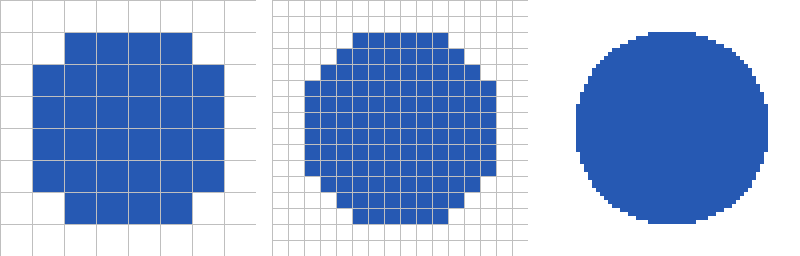
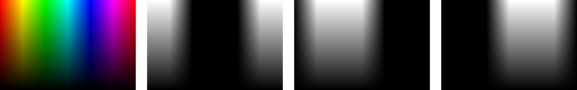
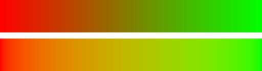
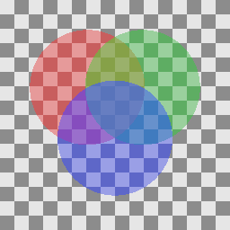

デジタル画像
CG の計算の最終的な出力は、デジタル画像である。本章では、画像をプログラムで扱うための基礎として、画素、色の表現、ガンマ補正、半透明の合成を説明する。
本章のコードは cg_utils.py と image_basics.py にある。
画素と解像度
ディスプレイや画像ファイルの画像は、縦横に並んだ小さな点の集まりである。この点を画素（ピクセル）という。画素ごとに 1 つの色を持たせて画像を表す形式を、ラスター画像という。これに対して、図形を「始点と終点の座標」や「中心と半径」のような数値で表す形式を、ベクター画像という。ベクター画像も、ディスプレイに表示するときには最終的にラスター画像に変換される。この変換をラスタライズといい、2 次元の図形のラスタライズで扱う。
画像の縦と横の画素の数を、解像度という。図 1 は、同じ円を 8 × 8、16 × 16、64 × 64 の解像度で表したものである。解像度が低いほど、円の輪郭が階段状になる。

図 1 同じ円を 8 × 8（左）、16 × 16（中）、64 × 64（右）の解像度で表したもの
この図では、画素の中心が円の内側にあれば青、外側にあれば白にしている。画素は面積を持つ正方形であり、本資料では、左から i 番目、上から j 番目の画素の中心の座標を \((i + 0.5, j + 0.5)\) とする。
18def pixel_centers(width: int, height: int) -> tuple[FloatArray, FloatArray]:
19 """各画素の中心の座標 (x, y) を返す。
20
21 画素 (i, j) の中心は (i + 0.5, j + 0.5) とする。y 軸は下向きである。
22 """
23 xs, ys = np.meshgrid(np.arange(width) + 0.5, np.arange(height) + 0.5)
24 return xs, ys
画像を配列として扱う
ディスプレイは、赤（R）、緑（G）、青（B）の 3 色の光を混ぜて色を表示する。そのため、カラー画像は画素ごとに R、G、B の 3 つの値を持つ。それぞれの色の値だけを集めた画像を、チャンネルという。
本資料では、画像を形状が（高さ, 幅, 3）の NumPy 配列で表す。image[y, x] が、左から x 番目、上から y 番目の画素の (R, G, B) の値である。行の番号（y）が先にくることに注意する。図 2 は、カラー画像と、その R、G、B の各チャンネルを灰色の濃淡で表したものである。

図 2 カラー画像（左端）と、その R、G、B のチャンネル（左から 2 番目から右端）
画像ファイルでは、各チャンネルの値を 8 ビット（0 から 255 の整数）で記録するのが一般的である。一方、CG の計算では、値を 0.0 から 1.0 の実数で扱うほうが都合がよい。光を足し合わせたり、係数を掛けたりする計算を、範囲を気にせずに行えるからである。本資料では、計算は実数で行い、画像を保存するときだけ整数に変換する。
70def to_pil(image: FloatArray) -> Image.Image:
71 """0.0 から 1.0 の値を持つ (高さ, 幅, 3) の配列を Pillow の画像にする。"""
72 data = np.clip(image, 0.0, 1.0) * 255.0 + 0.5
73 return Image.fromarray(data.astype(np.uint8))
0.5 を足してから整数に変換しているのは、小数点以下を切り捨てではなく四捨五入にするためである。
明るさが 1.0 を超える値も扱う画像を、HDR（ハイダイナミックレンジ）画像という。屋外の太陽と室内の照明のように、明るさが大きく異なる場面の計算では、値を 1.0 で打ち切らずに実数のまま扱い、最後に表示できる範囲に収める。この処理をトーンマッピングという。本資料のコードは、簡単のため 1.0 を超える値を 1.0 に切り詰めている。
ガンマ補正
画像ファイルに記録された値は、多くの場合、光の強さに比例していない。一般的な画像の色空間である sRGB では、値が 0.5 の灰色が出す光の強さは、値が 1.0 の白のおよそ 21% である。これは、人間の目が暗い色の違いに敏感であることに合わせて、暗い側に多くの段階を割り当てるためである。この非線形な変換をガンマ補正という。
sRGB の値 \(C\)（R、G、B のそれぞれ）と、光の強さに比例する線形な値 \(C_{\mathrm{linear}}\) の関係は、次の式で表される。
53def srgb_to_linear(c: FloatArray) -> FloatArray:
54 """sRGB の値(0.0 から 1.0)を、光の強さに比例する線形な値に変換する。"""
55 c = np.asarray(c, dtype=np.float64)
56 return np.where(c <= 0.04045, c / 12.92, ((c + 0.055) / 1.055) ** 2.4)
光の物理的な振る舞いにもとづく計算は、線形な値で行う必要がある。たとえば、光の足し合わせ、照明の計算、色の補間、画像の縮小とぼかしである。sRGB の値のまま計算すると、結果が暗く濁る。
図 3 は、赤から緑へのグラデーションを 2 つの方法で作ったものである。上の帯は sRGB の値をそのまま補間しており、中央付近が暗く濁っている。下の帯は、線形な値に変換してから補間し、sRGB の値に戻しており、中央付近も明るい。

図 3 sRGB の値で補間したグラデーション（上）と、線形な値で補間したグラデーション（下）
本資料のレンダラーは、照明の計算を線形な値で行い、画像を保存する直前に linear_to_srgb() で sRGB の値に変換する。テクスチャのように画像ファイルから読み込んだ色は、計算に使う前に srgb_to_linear() で線形な値に変換する。
アルファ値と半透明の合成
ガラスや煙のような半透明の物体、文字の輪郭のなめらかな縁を表すには、画素の色に加えて不透明度を持たせる。この不透明度をアルファ値という。アルファ値は、0.0 で完全に透明、1.0 で完全に不透明である。
色 \(C_f\)、アルファ値 \(\alpha\) の前景を、色 \(C_b\) の背景の上に重ねた結果の色 \(C\) は、次の式で求められる。この合成の方法を over 演算子という。
109def over(fg: FloatArray, alpha: FloatArray, bg: FloatArray) -> FloatArray:
110 """前景の色 fg を、アルファ値 alpha で背景 bg の上に重ねる。
111
112 Porter と Duff の over 演算子(前景のアルファ値が乗算済みでない場合)。
113 色は線形な値で渡す。
114 """
115 return np.asarray(fg * alpha + bg * (1.0 - alpha), dtype=np.float64)
図 4 は、市松模様の背景の上に、アルファ値 0.6 の赤、緑、青の円を順に重ねたものである。

図 4 アルファ値 0.6 の円を順に重ねた結果
over 演算子の結果は、重ねる順序によって変わる。そのため、半透明の物体を含む 3 次元の場面では、奥のものから順に描く必要がある。これは、3 次元のラスタライズで説明する Z バッファー法だけでは解決できない問題の 1 つである。
色にあらかじめアルファ値を掛けておく形式（乗算済みアルファ）もよく使われる。乗算済みアルファでは、合成の式が \(C = C'_f + (1 - \alpha) C_b\)（\(C'_f = \alpha C_f\)）となり、画像の縮小や合成を繰り返しても縁に不自然な色が出にくい。
画像のファイル形式
計算した画像を保存するファイル形式には、主に次のものがある。
形式 |
圧縮 |
特徴 |
|---|---|---|
PNG |
可逆 |
画質が劣化しない。アルファ値を持てる。図やスクリーンショットに向いている。本資料の図は全て PNG である。 |
JPEG |
非可逆 |
ファイルが小さい。写真に向いているが、輪郭の周りにノイズが出る。 |
WebP、AVIF |
可逆と非可逆 |
Web 向けの新しい形式。JPEG より小さいファイルで同等の画質を得られる。 |
OpenEXR |
可逆と非可逆 |
値を浮動小数点数で記録できる。HDR 画像や、映像制作での中間データに使われる。 |